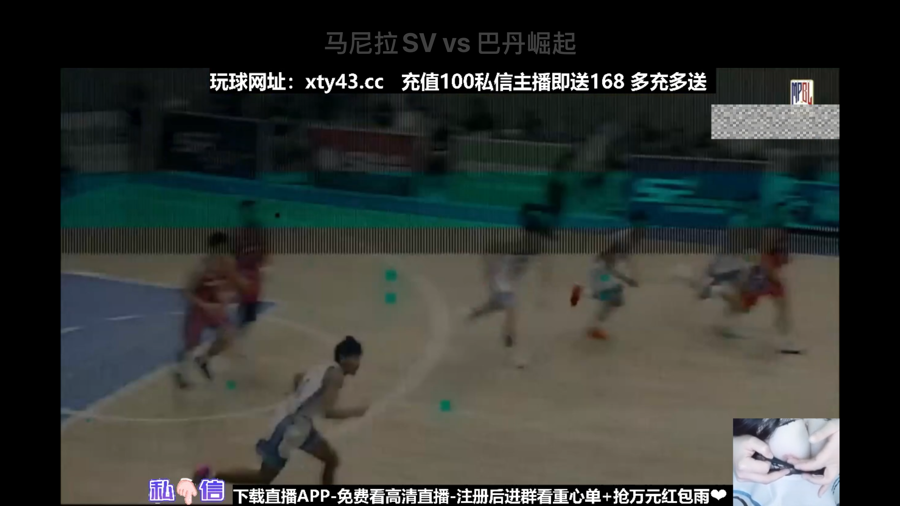
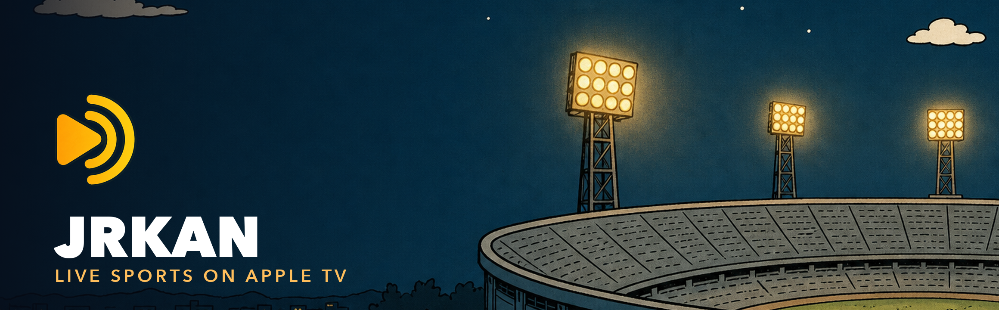

版本 0.1.0（build 1）· Bundle ID com.leeguoo.jrskan.tv · 评估日期 2026-08-01
本文覆盖两件事：已经做完的品牌图标资源，以及App Store 上架所需的全部字段与前置条件。 结论先说：图标与资源目录已完成并通过真机 Release 构建；但这一版不能提交 App Store， 阻断原因在第一节，不是文案或素材能绕过的问题。

assets/store/evidence/，仅作内部记录，不可作为 App Store 截图使用。
| 条款 | 问题 | 事实依据 |
|---|---|---|
| 5.2.1 / 5.2.3 | 未授权转播第三方持权赛事 | JRSClient.swift 抓取 www.jrs03.com 首页与列表脚本，StreamResolver.swift 逐层解析 iframe 取出 .m3u8 直接交给 AVPlayer。列表实测含 WNBA、美职联、MPBL、乌拉甲、智利甲等持权赛事，应用侧没有任何授权链路。 |
| 1.4.3 / 3.1.1 / 5.3 | 向全年龄用户投放实钱赌博广告 | 播放流内嵌 xty43.cc 充值返利与"重心单"推广，烧录在视频画面里，应用无法过滤，也没有年龄门槛。Apple 对 App 内出现的第三方博彩推广是零容忍。 |
| 5.2.5 | 品牌名沿用第三方站点 | CFBundleDisplayName = JRKAN、Bundle ID 含 jrskan，与数据来源站点品牌高度绑定，无授权文件。 |
| 2.1 | 核心功能依赖单一硬编码外站 | JRSClient.defaultHomepage 写死 https://www.jrs03.com/。该域名一换，应用即整体不可用——审核期间站点波动会直接判 App 无法使用。 |
| 2.5.1 | ATS 全量放行 | NSAllowsArbitraryLoads = true。仅这一项就需要书面理由；配合"抓取任意第三方页面"的用途，理由不成立。 |
把内容来源换掉，上面 5 项里的 4 项同时消失。三条路按落地成本排序：
| 路线 | 做法 | 代价 / 结果 |
|---|---|---|
| A. 用户自备播放源 推荐 |
移除内置站点抓取，改为用户在应用里填入自己的 M3U / IPTV 播放列表 URL。应用只做播放器与 EPG，不预置任何源。 | 这是 App Store 上 IPTV 播放器（iPlayTV、GSE 等）长期在架的模式。内容责任转移给用户，赌博叠加层随源消失。功能改动约 1～2 天。 |
| B. 取得授权 | 与赛事版权方或持牌平台签转播/分发协议，改用其官方 API 与 CDN。 | 最干净，但需商务与法务，周期以月计，且需向 Apple 提交授权证明。 |
| C. 只做赛程比分 | 保留列表、搜索、赛程、比分，删除播放能力，改用授权数据 API。 | 确定能过审，但产品价值大幅缩水，与"Apple TV 上看球"的原始目标不符。 |
图标用 chatgpt-imagegen 生成底图与标识，再由
assets/brand/build_assets.py 合成为 tvOS 要求的分层资源目录。
整套资源已通过 appletvos Release 构建，actool 编译无警告，
Xcode 自动注入了 CFBundleIcons 与 TVTopShelfImage。

| 资源 | 尺寸 | 说明 |
|---|---|---|
| App Icon（分层） | 400×240 @1x / @2x | 主屏图标，Front / Middle / Back 三层视差 |
| App Icon - App Store（分层） | 1280×768 @1x | tvOS 商店图标，随二进制上传，无需在 ASC 单独上传 |
| Top Shelf Image | 1920×720 @1x / @2x | 应用聚焦时的顶部横幅 |
| Top Shelf Image Wide | 2320×720 @1x / @2x | 宽屏版顶部横幅 |
| 营销方图 | 1024×1024 | 不进包，供官网 / 媒体资料使用 |
App/Resources/Assets.xcassets/
└─ App Icon & Top Shelf Image.brandassets/ ← 进包，actool 编译
assets/brand/src/ AI 生成的原始素材（icon-bg / icon-mark / topshelf-art）
assets/brand/out/ 扁平化预览与营销图，不进包
assets/brand/build_assets.py 合成脚本改动素材后重新生成：
python3 assets/brand/build_assets.py
xcodegen generate
xcodebuild -project JRKANApple.xcodeproj -scheme JRKANTV \
-sdk appletvos -configuration Release build CODE_SIGNING_ALLOWED=NO| 状态 | 项目 | 当前值 / 需要做什么 |
|---|---|---|
| OK | 部署目标 | tvOS 17.0，满足当前 App Store 最低要求 |
| OK | 架构 / 设备族 | arm64，UIDeviceFamily = [3] |
| OK | 图标与 Top Shelf | 见第 2 节，已进包 |
| 改 | 版本号 | MARKETING_VERSION 0.1.0 → 正式版应为 1.0.0；CURRENT_PROJECT_VERSION 每次上传递增 |
| 改 | 代码签名 | CODE_SIGNING_ALLOWED: NO 是本地调试配置。上传需要 Apple Distribution 证书 + App Store provisioning profile，在 project.yml 里切回 Automatic 并配 Team ID |
| 改 | ATS | 删除 NSAllowsArbitraryLoads。走路线 A 后所有请求应为 HTTPS；确需 HTTP 时用 NSExceptionDomains 精确到域名 |
| 加 | 隐私清单 | 新增 PrivacyInfo.xcprivacy。本应用无三方 SDK，仅用 URLSession；若路线 A 用 UserDefaults 存播放源，需声明 CA92.1（App 自身功能） |
| 加 | 出口合规 | Info.plist 加 ITSAppUsesNonExemptEncryption = false（只用 HTTPS 属豁免），可省掉每次上传的问卷 |
| 查 | 工作区有未提交改动 | 本次会话期间 MatchListView.swift、PlayerScreen.swift、JRSListingParserTests.swift、0-README.html 被本会话之外的进程改动（新增"第 1/2/3 步"引导式 UX）。提交前确认这些改动是预期的 |
<key>ITSAppUsesNonExemptEncryption</key>
<false/>
<!-- 删除整个 NSAppTransportSecurity 块；若确需例外，改成： -->
<key>NSAppTransportSecurity</key>
<dict>
<key>NSExceptionDomains</key>
<dict>
<key>example-cdn.com</key>
<dict>
<key>NSExceptionAllowsInsecureHTTPLoads</key><true/>
</dict>
</dict>
</dict>这些字段建应用时填一次，之后基本不改。
| 字段 | 建议值 | 说明 / 限制 |
|---|---|---|
| 平台 | tvOS | 单平台。若日后加 iOS 需同一 Bundle ID 下新增平台 |
| Bundle ID | com.leeguoo.jrskan.tv | 换品牌名时一并换掉 jrskan。Bundle ID 创建后不可修改，要在建应用前定好 |
| SKU | JRKANTV-2026 | 内部标识，用户不可见，创建后不可改 |
| 应用名称 | 待定（见第 1 节 5.2.5） | 上限 30 字符，全球唯一 |
| 副标题 | 在 Apple TV 上看直播 | 上限 30 字符，显示在名称下方 |
| 主要语言 | 简体中文 | 界面全中文，与之一致 |
| 主类别 | 体育 | |
| 次类别 | 娱乐 | 可留空 |
| 价格 | 免费 | 无内购、无订阅、无广告 SDK |
| 供应地区 | 按发行计划勾选 | 体育内容授权通常有地域范围，勿默认全球 |
| 内容版权 | 2026 Leo Guo | 格式为「年份 + 权利人」，不写 © |
按路线 A（用户自备源、应用不预置内容）的答法：
| 问题 | 回答 |
|---|---|
| 暴力 / 恐怖 / 色情 / 药物等各类内容 | 无 |
| 模拟赌博 / 现实赌博 | 无（前提是已切断第 1 节的赌博叠加层来源） |
| 不受限制的网页访问 | 是 —— 用户可填任意播放源 URL |
| 用户生成内容 | 否 |
用你自己的播放源，在 Apple TV 上看比赛。填入 M3U 播放列表，遥控器两下就能开播，
支持分类、搜索与多线路切换。把你自己的直播源，搬到客厅的大屏幕上。
这是一个为 Apple TV 打造的原生播放器。它不提供、不托管、也不分发任何视频内容——
所有频道都来自你自己填入的 M3U / M3U8 播放列表地址。
主要功能
· 播放列表导入：填入你自己的 M3U 播放列表 URL，自动读取频道与赛事条目。
· 分类浏览：按你的播放源分组浏览，支持热门、篮球、足球等自定义分类。
· 搜索：按队伍名或联赛名快速定位。
· 多线路：同一条目下有多个地址时，可在播放器内直接切换，一条卡顿就换下一条。
· 原生播放：基于 AVPlayer，支持 HLS 直播，遥控器操作与系统播放控件完全一致。
· 干净的界面：专为 10 英尺观看距离设计，没有广告，没有账号，没有追踪。
关于内容
本应用是一个播放器工具，本身不附带任何频道或赛事。你需要自备合法的播放源地址，
并自行确认你拥有观看这些内容的权利。应用不会绕过任何登录、DRM、付费墙或地域限制。
隐私
不收集任何个人信息，不需要注册或登录，不接入任何第三方分析或广告 SDK。
你填入的播放源地址只保存在这台 Apple TV 本地。直播,播放器,m3u,m3u8,iptv,hls,体育,比赛,足球,篮球,电视,客厅,遥控器,播放列表首个版本。| 字段 | 必填 | 要求 |
|---|---|---|
| 支持网址 | 必填 | 必须是可访问的真实页面，含联系方式。缺这一项直接被拒，GitHub Pages 或仓库 README 页即可 |
| 隐私政策网址 | 必填 | 即使不收集任何数据也必须提供。内容需与第 6 节的隐私标签一致 |
| 营销网址 | 选填 | 没有官网就留空 |
| 项目 | 规格 | 说明 |
|---|---|---|
| App 截图 | 1920×1080 或 3840×2160 PNG/JPG | 至少 1 张，最多 10 张。必须是应用真实界面，不能加边框、设备外壳或营销文字拼贴 |
| App 预览视频 | 1920×1080，15–30 秒 | 选填。必须全部取自应用内录屏 |
# 重新截图（Apple TV 4K 模拟器，输出 3840×2160）
xcrun simctl list devices available | grep "Apple TV"
xcrun simctl install <UDID> .build/tvos-sim/Build/Products/Debug-appletvsimulator/JRKANTV.app
xcrun simctl launch <UDID> com.leeguoo.jrskan.tv
xcrun simctl io <UDID> screenshot assets/store/screenshots/01-list.png按当前代码事实填写——应用无账号、无分析、无广告 SDK，仅发出网络请求：
| 数据类别 | 是否收集 | 说明 |
|---|---|---|
| 联系信息 / 健康 / 财务 / 位置 | 否 | 代码中无任何相关 API 调用 |
| 标识符（用户 ID / 设备 ID） | 否 | 无注册、无设备指纹 |
| 使用数据 / 诊断 | 否 | 未接入任何分析 SDK |
| 用户内容 | 否 | 路线 A 的播放源 URL 仅存本地，不上传，属"不收集" |
最终选择 「未收集数据」。隐私政策页面必须写成同样的口径，两处不一致会被退回。
| 字段 | 填写 |
|---|---|
| 联系人 | 姓名 + 电话 + 邮箱，需真实可达，审核有疑问会直接联系 |
| 演示账号 | 不需要——应用无登录。在 ASC 里取消勾选「需要登录」 |
| 备注 | 见下方模板 |
| 附件 | 若走路线 B，必须上传内容授权协议扫描件 |
This app is a media player for tvOS. It does not host, provide, bundle, or
distribute any video content.
On first launch the user is asked to enter their own M3U / M3U8 playlist URL.
All channels and streams shown in the app come exclusively from that
user-supplied playlist. The app ships with no preloaded sources.
The app does not bypass any login, DRM, paywall, or geographic restriction.
It plays standard HLS streams using AVPlayer.
To test: on the setup screen, enter the sample playlist URL below, which points
to freely redistributable test streams.
Test playlist: <填入你自己托管的测试 M3U 地址>
No account or login is required.NSAllowsArbitraryLoads，去掉伪装 User-AgentMARKETING_VERSION 改 1.0.0，CURRENT_PROJECT_VERSION 置 1project.yml 恢复签名：CODE_SIGN_STYLE: Automatic + DEVELOPMENT_TEAMPrivacyInfo.xcprivacy；Info.plist 加 ITSAppUsesNonExemptEncryptionbuild_assets.py，确认图标与 Top Shelf 文字一致xcrun altool 上传到 App Store Connect# 归档（需已配好签名）
xcodebuild -project JRKANApple.xcodeproj -scheme JRKANTV \
-sdk appletvos -configuration Release \
-archivePath build/JRKANTV.xcarchive archive
# 导出并上传
xcodebuild -exportArchive -archivePath build/JRKANTV.xcarchive \
-exportOptionsPlist ExportOptions.plist -exportPath build/export
xcrun notarytool store-credentials # 首次配置
xcrun altool --upload-app -f build/export/JRKANTV.ipa \
-t tvos --apiKey <KEY_ID> --apiIssuer <ISSUER_ID>